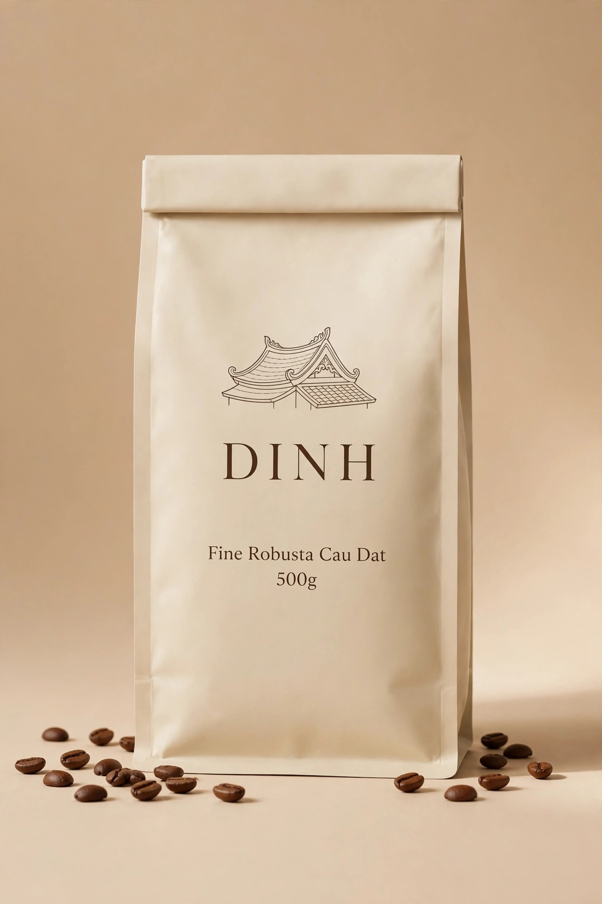

Bán chạy
Fine Robusta Đức Trọng
Hương cacao đậm, hậu ngọt dài, chua thanh nhẹ. Rang vừa — hợp nhất cho phin truyền thống.
- Vùng trồng
- Cầu Đất, Lâm Đồng
- Sơ chế
- Natural (khô tự nhiên)
- Mức rang
- Vừa (Medium)
- Gợi ý pha
- Phin, pour over
Sắp mở bán
Nhắn Zalo tư vấn